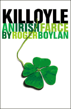
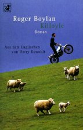
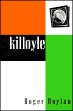
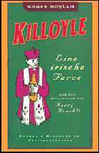

|  |
 |
 |
 |
|
Roger Boylan's
Killoyle, An Irish Farce, published by Dalkey Archive
Press, and its sequel, The Great
Pint-Pulling Olympiad, published by Grove Press,
are a pair of satirical novels that keep alive the
spirit of Jonathan Swift, James Joyce, Samuel Beckett,
and Flann O'Brien.

|
Milo |
Meet Milo Rogers -- a great
headwaiter,
a not-so-great poet (full text of chapter
1 of Killoyle). |
| Wolfetone |
Eavesdrop on Wolfetone's chat with
his God
(from chapter 3 of Killoyle). |
| Two
Strokes |
Read the story that grew into
Killoyle. |
| Deutsch |
Find out about the German
translations of Killoyle
and The Great Pint-Pulling Olympiad. |
The Great Pint-
Pulling Olympiad |
Read a synopsis and sample chapter
from
The Great Pint-Pulling Olympiad. |
| Links |
Follow hyperlinks to related Web
sites. |
| Reviews |
Peruse excerpts from various book
reviews. |
| Interviews |
Read interviews and articles on
Boylan. |
| E-mail |
Send a message to Boylan. |
| Buy |
Purchase Killoyle
online or locate an independent
bookstore in your area that carries it. |
|
Critical Praise
"Killoyle ranks among the
most impressive novels written by an American in recent years."
Harvey Pekar, Austin
Chronicle
"This is a virtuoso performance, filled
with truly funny turns of phrase and event."
Publishers Weekly
"Comparisons to James Joyce will come
inevitably. . . . Boylan proves himself capable of spinning a
fabulous yarn, as colorful as it is tangled." The
Minnesota Daily
"Pleasure awaits in this hilarious Irish
farce, a first novel that captures the absurdly comic spirits of
Joyce and Beckett in its depiction of an Emerald Isle town
peopled by some most peculiar folk, indeed. Wallowing in such
gloomy, traditional Irish concerns as religious angst and too
much booze, Boylan's wacky tale is deftly fleshed out with dense
footnotes addressed directly to the reader--a clever technique
that, in the hands of this skillful writer, helps provide for
heaps of hearty laughter amid all the tears. Highly recommended."
The Library Journal (starred
review)
"Boylan's debut succeeds as a work in
which the telling is more important--and more beguiling--than the
tale." Kirkus Reviews
"Killoyle, An Irish Farce is
a wonderful book following in [the] Anglo-Irish literary
tradition. And like its Swiftian and Tristram Shandy forefathers,
its characters all appear to be running low on luck, but the book
is written with such humor and sympathy that their lives are a
joy to participate in . . . Buy this book and read it."
Literary Society Review
"I was hooked . . . Boylan writes with
wit and a keen eye for the ridiculous." The Irish
Emigrant
"To the people of Dalkey Archive Press,
Roger Boylan's Killoyle must have looked like the
work of Flann O'Brien resurrected in a world long gone PoMo."
The Recorder
"A fine first novel, continuing the
Dalkey tradition of publishing both Irish humorists and sundry
members of the literary avant-garde." Cups:
The Cafe Culture Magazine
"Roger Boylan brings a wholly Irish comic
vision to his portrait of [the] small town in
Killoyle."
Gazette.Net
"Killoyle is sure to please
those enthralled by the tragicomic history of Ireland, as well as
those with a bent for rivers of prose in the Joycean mode."
Dallas Morning News
"Boylan's first and very comic novel . .
. relates the adventures of a host of ne'er-do-wells [whose]
antics are simultaneously laughable and poignant . . . Much of
the novel's humor is due to Boylan's unique tone, which gives
equal weight to complex emotions and buffoonery . . . His
lengthy, rollicking sentences are stories unto themselves, and he
experiments with form, plot, voice and character until the last
period." Austin
American-Statesman
"Killoyle. . . reflects the
literary tradition of James Joyce, Samuel Beckett, and Flann
O'Brien. . . . the joy of the novel lies in the language.
Boylan's style is rich in 'Irishisms' yet clever and original.
All in all, Killoyle is a raucous romp of a read."
Magill Book Reviews
|
Send your comments or questions about
Killoyle to Roger Boylan at
roger_boylan@hotmail.com.
U.S.-born, with roots in Ireland and the New
York area, Boylan attended university in Ireland
and Scotland and lived and worked in those
countries and in France and Switzerland before
returning to New York in 1978 and, in 1993, moving
to Texas, where he now lives with his wife and
daughter. His short stories have appeared in
various journals, including the Boston
Review, the Austin
American-Statesman, The
Recorder, Scrivener, and
The Literary Review. He's also written an
number of reviews for the Boston
Review New
Fiction Forum. He is currently
working on the third novel in the Killoyle trilogy,
provisionally titled Killoyle Wine and
Cheese.
|
|

{kind=link}
{kind=link}
{kind=link}
{kind=link}
{kind=link}